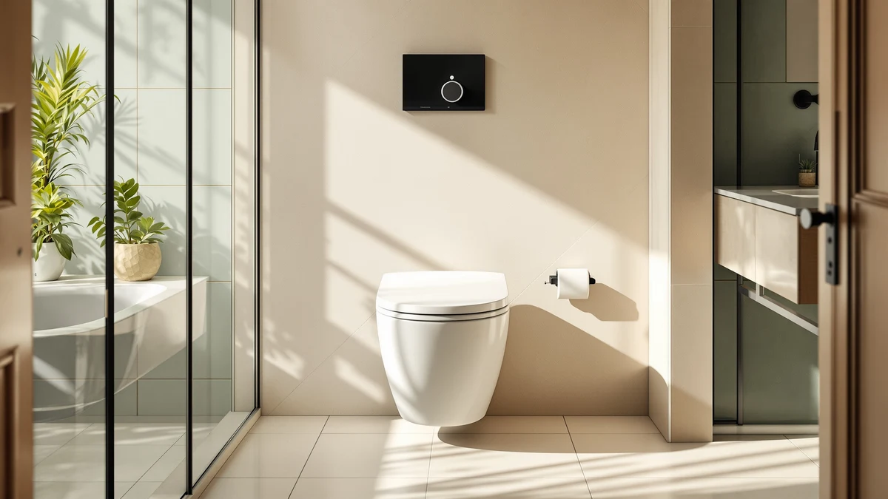

Mayfair Ashton Easy to Review (2026): Worth It?
Prices and picks verified as of October 2026. Independent, reader-supported reviews.


Quick Answer
The Mayfair Ashton Easy to Clean is a straightforward elongated toilet seat built from plastic and wood, priced at $45.99. Based on our mayfair ashton easy to review comparison against three lower-priced alternatives, it earns its spot on elongated fit and brand consistency rather than any feature you can't get for less elsewhere.
Our pick: Mayfair Ashton Easy to Clean, $45.99 Check Price on Amazon
Bottom line: our top pick is the Mayfair Ashton Easy to Clean Single Hinge Toilet Seat at $45.99.
Things to Know Before You Buy
- The Mayfair Ashton Easy to Clean fits elongated toilet bowls only, not round ones.
- At $45.99, it costs more than every alternative we compared, which range from $39.99 to $41.42.
- Its plastic and wood construction is standard for mid-range seats in this category.
- Two of the three alternatives, from Drive Medical and HealthSmart, are raised and locking seats built for accessibility rather than direct swaps.
- Mayfair also sells the Bennett, a second elongated model in the same lineup at a lower price.
If you're running a mayfair ashton easy to review search before you buy, you want a straight answer: does this elongated toilet seat deliver enough at $45.99 to beat the cheaper options on the market. We compared the Mayfair Ashton Easy to Clean against three other seats, including a second Mayfair model and two raised, locking seats built for accessibility, using the pricing, materials, and sizing data published for each.
The short version is that the Ashton holds its own within its own category of standard elongated seats, but it isn't the cheapest way to get a Mayfair seat in your bathroom, and it isn't built for the accessibility needs the Drive Medical and HealthSmart picks address. Below, we break down what the research shows about the Ashton's construction, where its price premium comes from, and which of the three alternatives makes more sense depending on what you actually need from a toilet seat.
None of this requires guesswork if you approach it in order. First confirm your bowl shape, since that single detail rules out or rules in every seat in this comparison before price ever enters the decision. Then decide whether you're buying strictly on brand, strictly on price, or specifically for extra height and stability, because the four seats here split cleanly along those three lines rather than competing head to head on every metric.
Why You Should Trust Us
Ilane Tall and the Best Toilet Seats team built this mayfair ashton easy to review comparison by researching the publicly listed pricing, materials, and sizing for the Ashton and three competing seats, rather than repeating marketing copy. We track prices and listings across the toilet seat category on an ongoing basis, and we disclose affiliate relationships clearly so you know how this site makes money. We compare the Ashton and its alternatives on the same criteria: price, material, size, and stated use case.
We do not accept payment from Mayfair, Drive Medical, or HealthSmart in exchange for placement in this article, and the order these seats appear in reflects how they compare on the record, not which one pays the highest commission. When we can't verify a claim through a published spec sheet or retail listing, we leave it out rather than repeat something a manufacturer's marketing page asserts without backing it up.
How We Compared
We did not install or sit on the Mayfair Ashton Easy to Clean ourselves. This mayfair ashton easy to review analysis is built on a direct comparison of the specs and pricing that Mayfair and its competitors publish: material, bowl-shape compatibility, and current retail price. We checked the Ashton against the Bennett, its sibling model from the same brand, and against two raised seats from Drive Medical and HealthSmart to see where the price differences come from. When a claim can't be verified through published specs or pricing, we say so instead of guessing.
Overview & Specs

Mayfair Ashton Easy to Clean
What we like
- Elongated shape matches the majority of modern US toilet bowls
- Plastic and wood build is a familiar, proven combination for this seat category
- Comes from Mayfair, a brand with more than one model in this lineup
Flaws but not dealbreakers
- At $45.99, costs $4 to $6 more than every alternative we compared
- Won't fit round toilet bowls, so measure before buying
- No raised or locking features if accessibility is a priority
| Material | Plastic / wood |
| Size | Elongated |
The Mayfair Ashton Easy to Clean is an elongated toilet seat built from a plastic and wood combination, the same general construction most mid-range seats in this category use. Its name points to an easy-to-clean design, which is the core selling point Mayfair leans on for this model. At $45.99, it sits at the top of the four seats in this mayfair ashton easy to review comparison, and the price gap from the cheaper alternatives is the main thing you're weighing when you consider it.
Because it's elongated rather than round, the Ashton is meant for the bowl shape found in most US bathrooms built or renovated in recent decades. If your current seat is also elongated, replacing it with the Ashton is a straightforward swap. If you're not sure which shape you have, measure from the mounting bolts to the front edge of the bowl before ordering, since an elongated seat won't fit a round bowl and a return costs you both time and shipping.
Beyond shape and material, the listing doesn't give us a documented hinge type, weight capacity, or installation hardware detail to compare against the other three seats, so we're not going to invent numbers the manufacturer hasn't published. What we can say with confidence is the price, the material, and the bowl shape it's built for, and those three facts are what should drive your decision between the Ashton and its Mayfair sibling.
What We Liked
What stands out most in this mayfair ashton easy to review comparison is how squarely the Ashton fits its category. The elongated shape covers the bowl type found in most US bathrooms, so buyers generally won't need to double check compatibility the way they would with a round-only seat. The plastic and wood build is a known quantity: it's the same general construction used across most mid-range seats, Mayfair's own Bennett included, so you're not gambling on an unfamiliar material. And because Mayfair sells more than one model at this price point, buyers who want to stay with a single brand across their bathroom fixtures have that option built in.
What Could Be Better
The clearest drawback is price. At $45.99, the Ashton costs more than every other seat in this comparison, including Mayfair's own Bennett at $41.42. That $4.57 gap doesn't map to any feature difference we could verify in the published specs; material and elongated fit are identical on paper to the cheaper Bennett. The Ashton also offers nothing for buyers who need a raised or locking seat. If accessibility is part of your decision, the Drive Medical and HealthSmart alternatives address that directly, and the Ashton does not.
There's also no published rating or review count attached to this listing for us to weigh against the price, so buyers are largely trusting the Mayfair name rather than a documented track record on this specific model. If a verified star rating matters to your decision, check the current Amazon listing directly before you buy, since that figure can change and we're not going to cite a number that isn't confirmed at the time of writing.
Who Is It For?
The Mayfair Ashton Easy to Clean makes the most sense for someone who already owns Mayfair fixtures, has a confirmed elongated bowl, and isn't especially price sensitive within this narrow range. If you're comparing seats purely on cost, the Bennett gets you the same brand and the same elongated fit for less. If you or someone in your household needs extra height or a seat that locks in place, neither Mayfair model addresses that, and the Drive Medical or HealthSmart picks below are the more relevant options.
It's also a reasonable pick for someone replacing a seat sight unseen in a rental or a second home, where matching an existing Mayfair fixture matters more than shaving a few dollars off the purchase. In that scenario, the brand match can be worth more to you than the price gap, even though the Bennett is functionally the same seat for less money.
Alternatives to Consider
We put three alternatives against the Ashton in this mayfair ashton easy to review comparison: one from the same brand, and two built specifically for accessibility rather than as direct swaps.

Editor's Pick
Mayfair Bennett Toilet Seat with
The Bennett is Mayfair's other elongated seat in this lineup, and at $41.42 it undercuts the Ashton by more than $4 without a documented difference in shape or intended use. If your main reason for considering the Ashton was staying within the Mayfair brand, the Bennett gets you there for less, which makes it the more straightforward pick among the four seats we researched.
$41.42
Check Price on Amazon
Best Value
Drive Medical 12014 Premium Raised
The Drive Medical 12014 Premium Raised seat is not a like-for-like swap for the Ashton. At $40.93, it's priced close to the Bennett, but its raised design targets a different need entirely: added seat height for people who find a standard-height seat difficult to use. If accessibility, not brand or shape, is driving your search, this is the pick worth researching over either Mayfair option.
$40.93
Check Price on Amazon
Premium Choice
HealthSmart Locking Raised Toilet Seat
HealthSmart's Locking Raised Toilet Seat, priced at $39.99, is the least expensive of the four seats in this comparison and, like the Drive Medical pick, it's built for raised, secured seating rather than as a direct Ashton replacement. The locking mechanism is what sets it apart from the Drive Medical alternative, worth checking if a seat that won't shift matters to your household.
$39.99
Check Price on AmazonFrequently Asked Questions
Final Verdict
Our mayfair ashton easy to review verdict: the Ashton is a competent elongated toilet seat from Mayfair, but it's the most expensive of the four seats we compared, and its own sibling, the Bennett, matches it on shape and material for less money. Choose the Ashton if brand consistency matters more to you than the price gap, and choose the Bennett if it doesn't. If your actual need is a raised or locking seat, skip both Mayfair options and look at the Drive Medical or HealthSmart picks instead.